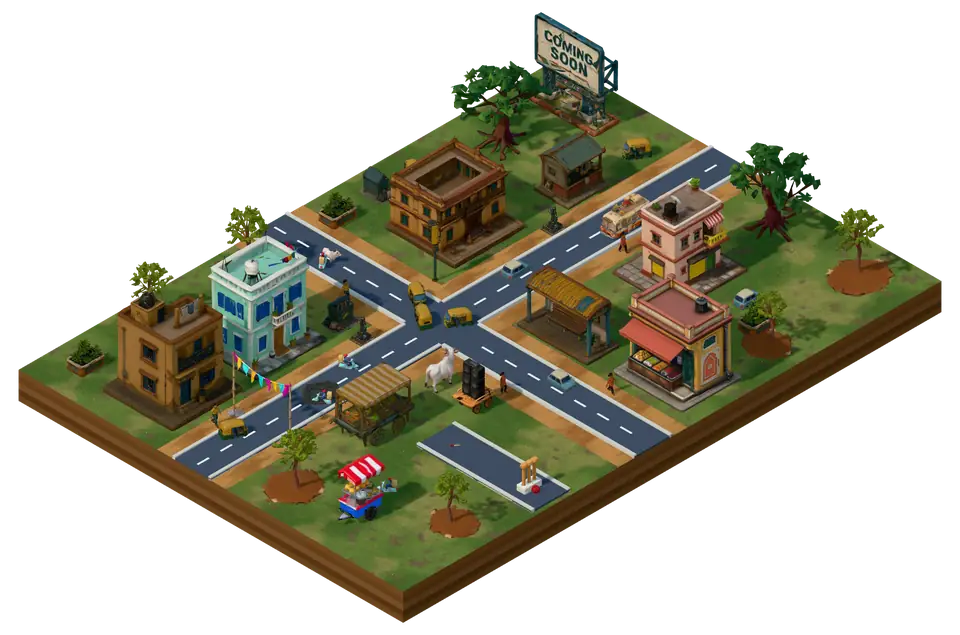

Help here
Support
Stuck, curious, or found a bug? Most answers are below. For anything else, write to us.
Questions
The game
What is Nirmaan Nagar?
A city builder for iPhone and iPad where the mess is the point. You build a little Indian town from roads, homes and shops, add potholes, confused signals, unfinished flyovers and very patient cows, and watch the traffic and the residents find their way round.
When can I play it?
Soon. Nirmaan Nagar is in private testing now and will come to the App Store for iPhone and iPad. The link goes on this site on launch day.
Which iPhones and iPads will it run on?
The App Store page will list the exact models when the game launches.
Does it cost anything?
There are no ads, and nothing to buy inside the game: you build with coins you earn by playing. The App Store page will show the game's price at launch.
Do I need the internet?
No. Your town lives on your phone and plays offline. You need the internet only to keep your town online or to play Missions online, and both are your choice.
Is it about a real place?
No. Nirmaan Nagar is a made-up town. The jokes are about potholes, paperwork and plans that never quite finish, never about real people, parties, places or religions. Nobody gets hurt: traffic waits, finds another way and carries on.
Your town and your data
Is my town saved?
Yes, on your phone, as you play.
If you are 18 or older and choose Keep my town online, it can also come back after you reinstall the game on the same phone, on a phone signed in to the same Game Center account, or on any iPhone if you tapped Keep with Apple.
What does the game collect?
Only what you agree to. Choose Only on this phone, or Under 18, and nothing about you or your town is sent. Online, a random player ID and your towns are kept with Unity, our game service. Crash reports, play statistics and online Missions are each a separate yes.
No ads, no advertising ID, no chat. The privacy policy has the details.
How do I delete my data?
In the game: Settings → Online → Delete my account.
Every other way, including by email after you have deleted the game, is on Delete your data.
Missions and friends
What are Missions?
Short team rounds that open at level 3. In Nala Safai you clean the nala and fill the truck before the inspection photo. In Khodo, Bharo, Phir Khodo you dig the trench, lay the pipe and fill it in, and then another department digs it up again.
Rounds pay coins and Chaos XP to your town, up to a daily limit.
How do I play with friends?
Open a Mission, tap Play online, then Play with friends, and share the room code. Your friends tap Join with code. Quick Play finds other players instead, and bots fill any empty places.
Online play is for players 18 and over who keep their town online.
Can other players message me?
No. There is no chat and nobody types a name. Everyone picks a nickname from the game's list, like Chai Captain or Pothole Pro, and speaks only in the game's fixed calls, such as “Help lift!” and “Sorry!”. You can mute, avoid or remove a player.
I have an idea for the game.
Please send it to support@nirmaannagar.com. Unlike the Ideas Here booth in the game, we read every one.